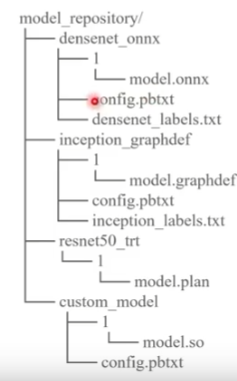
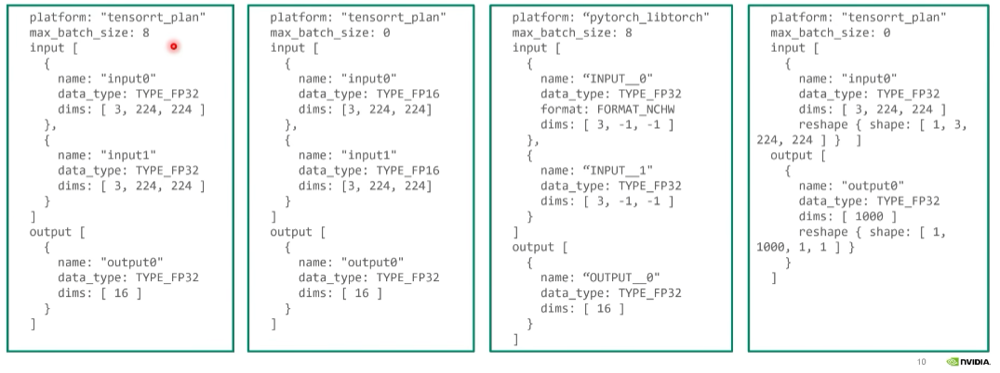
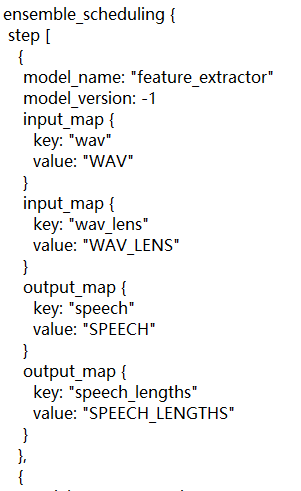
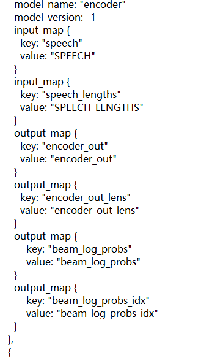

Triton入门级教程
整体架构：

1、Prepare the Model Repository
三级结构：

Model Repository目录
具体某一个推理模型目录：装配所有的模型
版本目录：模型文件
config文件
label files
1.1 model files
模型目录重要的Components：
TensorRT: model.plan
ONNX: model.onnx
TorchScriptss: model.pt
TensorFlow: model.graphdef, or model.savemodel /
Python: model.py
DALI: model.dali
OpenVINO: model.xml and model.bin
Custom: model.so
通过版本号找到正确版本的模型
1.2 Config File
定义模型和服务器的配置参数
1.3 Label File
对于分类模型，label file自动产生类别名的预测概率，方便我们读取分类模型的输出
2、Configure the Served Model
2.1 必须包含的信息
config.pbtxt文件中必须包含的信息
指定模型跑在哪个backend上面：platform / backend
max_batch_size：定义了模型最大能够执行的推理的batch是多少，用于限制模型推理不超过GPU的显存
输入和输出：Tensor
注意：在TensorRT, TensorFlow saved-model, ONNX models中config文件不是必须的，–strict-model-config=false。

绿色的二者选其一，红色是必须指定。
max_batch_size & input & output：（-1代表可变长度），max_batch_size=0表示模型的dims必须是真实的dims。

2.2 Version Policy
三个策略指定版本的信息：

2.3 Instance Groups
同时跑多个Instance提高GPU利用率

2.4 调度策略
Default Scheduler：
no batching
发送请求是多少就是多少batch_size
Dynamic Batcher：最重要提升吞吐性能，提升GPU利用率
preferred_batch_size：期望达到的batch_size
max_queue_delay_microseconds: 100：打batch的时间限制，越大表示愿意等待更多的请求
使用Dynamic Batcher之后客户端将比较小的请求合并成比较大的请求，可以极大提升模型的吞吐。
Sequence Batcher：

**Ensemble Scheduler：**组合成pipeline
2.5 优化手段
针对ONNX模型，可以直接开启TensorRT加速，TRT backend for ONNX

2.6 Model Warmup
热身的过程使模型推理稳定，热身完之后模型被加载进来并提供服务，但是模型加载比较漫长

3、Launch Triton Server
tritonserver –help：查看tritonserver所有的options
检查Server健康状态：curl -v
3.1 常用选项
–log-verbose
–strict-model-config
–strict-readiness
–exit-on-error
–http(grpc, metrics)-port
–model-control-mode
–pinned-memory-pool-byte-size
–cuda-memory-pool-byte-size
–backend-directory：找backend编译的动态库
–repoagnet-directory：用于预处理模型库的程序（加密）
4、Configure an Ensemble Model
子模块需要准备好，放在model_repository里面，创建ensemble model，在语音识别模型中对应着attention_rescoring

定义模块之间的连接关系
key：input_tensor和output_tensor在模型文件本身定义的名字
value：input_tensor和output_tensor在ensemble模型里面定义的名字，用于连接不同的step
可以服务于Stateful model，不是实际的模型，只是一种调度策略，每一个子模块有各自的调度器，模块之间的数据传输通过CPU memory。每一个子模型model instance是解耦的。
Feature extractor模块

Encoder模块

scoring模块

5、Send Requests to Triton Server
import tritonclient.grpc as grpcclient
创建client对象：grpcclient.
获取config数据：tritonclient.get_model_metadata
准备输入原始数据
打包到request里面，准备好inputs对象和outputs对象
发送请求执行推理：异步、同步、streaming
当在同一台机器部署server client时，使用shared memory模块，python_backend使用shared memory传输数据。